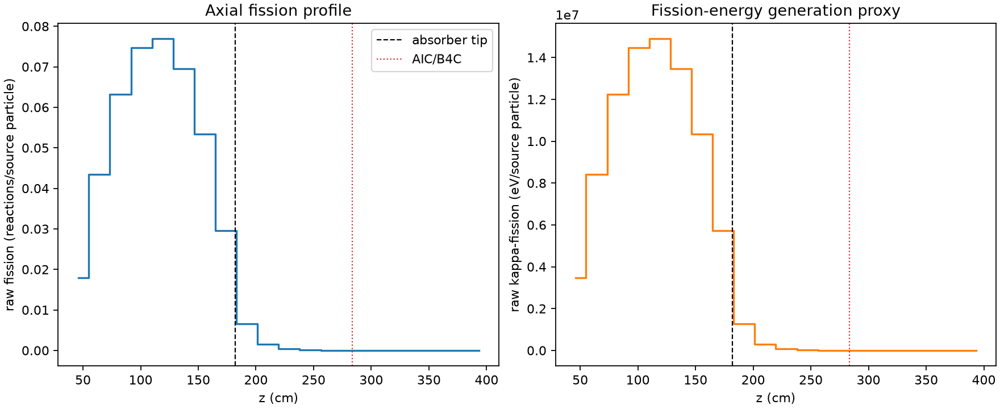
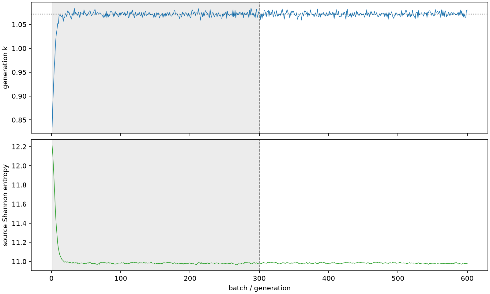

| field | value |
|---|---|
| experiment | V2-STAGE_128_OGRENCI_04-0022 |
| k | 1.0715152841081748 |
| MC standard error | 0.00016231198314106695 |
| seconds | 1006.8801908489986 |
| acceptance | not_assessed |
| convergence | review_required |
Completed is output integrity only; physical and statistical review required. Zero tallies do not prove zero production or zero uncertainty.
| diagnostic | value |
|---|---|
| geometric fuel voxels | 5280 |
| zero fission tally voxels | 1045 |
| low signal fuel voxels | 2122 |
| low signal fission share | 7.082373999227883e-05 |
| low signal kappa share | 7.08591760503701e-05 |
| important fission share | 0.9500811302248808 |
| previous filter included | 3158 |
| duration estimate s | 1562.5173488400023 |
| actual minus estimate s | -555.6371579910037 |
| fission relative MC error | statistics |
|---|---|
| all_geometric_fuel | {"voxels": 5280, "positive_mean_voxels": 4235, "zero_mean_voxels": 1045, "undefined_relative_error_voxels": 1045, "median": 0.01639387347275579, "p95": 0.946440325382334, "maximum": 1.0000000000000002} |
| low_signal | {"voxels": 2122, "positive_mean_voxels": 1077, "zero_mean_voxels": 1045, "undefined_relative_error_voxels": 1045, "median": 0.6201873487269113, "p95": 1.0, "maximum": 1.0000000000000002} |
| important_95pct | {"voxels": 1915, "positive_mean_voxels": 1915, "zero_mean_voxels": 0, "undefined_relative_error_voxels": 0, "median": 0.006384138463930433, "p95": 0.00995551193748532, "maximum": 0.012336475278901636} |
| outside_previous_filter | {"voxels": 2122, "positive_mean_voxels": 1077, "zero_mean_voxels": 1045, "undefined_relative_error_voxels": 1045, "median": 0.6201873487269113, "p95": 1.0, "maximum": 1.0000000000000002} |
| kappa_fission relative MC error | statistics |
|---|---|
| all_geometric_fuel | {"voxels": 5280, "positive_mean_voxels": 4235, "zero_mean_voxels": 1045, "undefined_relative_error_voxels": 1045, "median": 0.016370871282219587, "p95": 0.9470360300753471, "maximum": 1.0000000000000002} |
| low_signal | {"voxels": 2122, "positive_mean_voxels": 1077, "zero_mean_voxels": 1045, "undefined_relative_error_voxels": 1045, "median": 0.6223763432966103, "p95": 1.0, "maximum": 1.0000000000000002} |
| important_95pct | {"voxels": 1915, "positive_mean_voxels": 1915, "zero_mean_voxels": 0, "undefined_relative_error_voxels": 0, "median": 0.006376540045494294, "p95": 0.009943779921626067, "maximum": 0.012321063119999002} |
| outside_previous_filter | {"voxels": 2122, "positive_mean_voxels": 1077, "zero_mean_voxels": 1045, "undefined_relative_error_voxels": 1045, "median": 0.6223763432966103, "p95": 1.0, "maximum": 1.0000000000000002} |
| axial bin | fission share | kappa-fission share |
|---|---|---|
| 1 | 0.04094613484631337 | 0.040947795314572884 |
| 2 | 0.09948714124706158 | 0.0994863915182531 |
| 3 | 0.1444403592411776 | 0.14443887973866107 |
| 4 | 0.17072467486145523 | 0.17072283610629585 |
| 5 | 0.175848205796969 | 0.1758460753144151 |
| 6 | 0.15907605823587137 | 0.15907417726851994 |
| 7 | 0.12211775916392807 | 0.12211622762443514 |
| 8 | 0.06763986340169638 | 0.06764032820237365 |
| 9 | 0.015095903040543509 | 0.015101457513346099 |
| 10 | 0.0035198189601492466 | 0.0035212684173478313 |
| 11 | 0.0008424826010889924 | 0.000842832511129428 |
| 12 | 0.00019814706160133116 | 0.00019824626005150449 |
| 13 | 4.865726292523028e-05 | 4.8682021550138334e-05 |
| 14 | 1.00221718137445e-05 | 1.0028579986564903e-05 |
| 15 | 3.631063584480319e-06 | 3.6314926329333963e-06 |
| 16 | 1.0506155543346393e-06 | 1.0513415750053983e-06 |
| 17 | 8.844295158654506e-08 | 8.8789514456919e-08 |
| 18 | 1.9853148796012107e-09 | 1.9853394287447913e-09 |
| 19 | 0.0 | 0.0 |
| 20 | 0.0 | 0.0 |
Histories include the inactive-to-active transition at batch 300. kappa-fission approximates fission energy production, not total heat deposition.

